| Выручка | Расходы | Показы | Клики | CTR | CPC | Конверсия лендинг | Лиды | CPL | Качественных лидов | % в качественные | CPL2 | Продаж | % в сделку | CPO | Ср чек | Отказ | %BR | Чтобы увеличить выручку | Разница |
|---|---|---|---|---|---|---|---|---|---|---|---|---|---|---|---|---|---|---|---|
| 120 000 000₽ | 700 000₽ | 6 000 000 | 30 000 | 0,50% | 22₽ | 0,97% | 290 | 2 414₽ | 130 | 45% | 5 385₽ | 80 | 62% | 8 750₽ | 1 500 000₽ | 160 | 55% | -- | -- |
| 144 000 000₽ | 700 000₽ | 6 000 000 | 30 000 | 0,50% | 22₽ | 0,97% | 290 | 2 414₽ | 130 | 45% | 5 385₽ | 80 | 62% | 8 750₽ | 1 500 000₽ | 160 | 30% | Уменьшить долю отказов на | 25,49% |
| 144 000 000₽ | 700 000₽ | 6 000 000 | 30 000 | 0,50% | 22₽ | 0,97% | 290 | 2 414₽ | 130 | 45% | 5 385₽ | 80 | 62% | 8 750₽ | 1 500 000₽ | 86 | 55% | Уменьшить кол-во отказов на | 74 |
| 144 000 000₽ | 700 000₽ | 6 000 000 | 30 000 | 0,50% | 22₽ | 0,97% | 290 | 2 414₽ | 130 | 45% | 5 385₽ | 80 | 62% | 8 750₽ | 1 800 000₽ | 160 | 55% | Увеличить средний чек на | 30 0000₽ |
| 144 000 000₽ | 700 000₽ | 6 000 000 | 30 000 | 0,50% | 22₽ | 0,97% | 290 | 2 414₽ | 130 | 45% | 5 385₽ | 80 | 62% | 7 292₽ | 1 500 000₽ | 160 | 55% | Снизить стоимость клиента на | 1 458₽ |
| 144 000 000₽ | 700 000₽ | 6 000 000 | 30 000 | 0,50% | 22₽ | 0,97% | 290 | 2 414₽ | 130 | 45% | 5 385₽ | 80 | 74% | 8 750₽ | 1 500 000₽ | 160 | 55% | Увеличить процент в сделку на | 12,31% |
| 144 000 000₽ | 700 000₽ | 6 000 000 | 30 000 | 0,50% | 22₽ | 0,97% | 290 | 2 414₽ | 130 | 45% | 5 385₽ | 96 | 62% | 8 750₽ | 1 500 000₽ | 160 | 55% | Увеличить продажи на | 16 |
| 144 000 000₽ | 700 000₽ | 6 000 000 | 30 000 | 0,50% | 22₽ | 0,97% | 290 | 2 414₽ | 130 | 45% | 4 487₽ | 80 | 62% | 8 750₽ | 1 500 000₽ | 160 | 55% | Снизить стоимость качественного лида на | 897₽ |
| 144 000 000₽ | 700 000₽ | 6 000 000 | 30 000 | 0,50% | 22₽ | 0,97% | 290 | 2 414₽ | 130 | 54% | 5 385₽ | 80 | 62% | 8 750₽ | 1 500 000₽ | 160 | 55% | Увеличить процент качественных лидов на | 8,97% |
| 144 000 000₽ | 700 000₽ | 6 000 000 | 30 000 | 0,50% | 22₽ | 0,97% | 290 | 2 414₽ | 156 | 45% | 5 385₽ | 80 | 62% | 8 750₽ | 1 500 000₽ | 160 | 55% | Увеличить кол-во качественных лидов на | 26 |
| 144 000 000₽ | 700 000₽ | 6 000 000 | 30 000 | 0,50% | 22₽ | 0,97% | 290 | 2 011₽ | 130 | 45% | 5 385₽ | 80 | 62% | 8 750₽ | 1 500 000₽ | 160 | 55% | Снизить стоимость лида на | 402₽ |
| 144 000 000₽ | 700 000₽ | 6 000 000 | 30 000 | 0,50% | 22₽ | 0,97% | 348 | 2 414₽ | 130 | 45% | 5 385₽ | 80 | 62% | 8 750₽ | 1 500 000₽ | 160 | 55% | Увеличить кол-во лидов на | 58 |
| 144 000 000₽ | 700 000₽ | 6 000 000 | 30 000 | 0,50% | 22₽ | 1,16% | 290 | 2 414₽ | 130 | 45% | 5 385₽ | 80 | 62% | 8 750₽ | 1 500 000₽ | 160 | 55% | Увеличить конверсию страницы на | 0,19% |
| 144 000 000₽ | 700 000₽ | 6 000 000 | 30 000 | 0,50% | 0,50% | 0,97% | 290 | 2 414₽ | 130 | 45% | 5 385₽ | 80 | 62% | 8 750₽ | 1 500 000₽ | 160 | 55% | Снизить стоимость клика на | 12₽ |
| 144 000 000₽ | 700 000₽ | 6 000 000 | 30 000 | 0,60% | 22₽ | 0,97% | 290 | 2 414₽ | 130 | 45% | 5 385₽ | 80 | 62% | 8 750₽ | 1 500 000₽ | 160 | 55% | Увеличить CTR на | 0,10% |
| 144 000 000₽ | 700 000₽ | 6 000 000 | 36 000 | 0,50% | 22₽ | 0,97% | 290 | 2 414₽ | 130 | 45% | 5 385₽ | 80 | 62% | 8 750₽ | 1 500 000₽ | 160 | 55% | Увеличить кол-во кликов на | 6 000 |
| 144 000 000₽ | 700 000₽ | 700 000₽ | 30 000 | 0,50% | 22₽ | 0,97% | 290 | 2 414₽ | 130 | 45% | 5 385₽ | 80 | 62% | 8 750₽ | 1 500 000₽ | 160 | 55% | Увеличить кол-во показов на | 1 200 000 |
| 144 000 000₽ | 840 000₽ | 6 000 000 | 30 000 | 0,50% | 22₽ | 0,97% | 290 | 2 414₽ | 130 | 45% | 5 385₽ | 80 | 62% | 8 750₽ | 1 500 000₽ | 160 | 55% | Увеличить средний дневной бюджет на | 140 000₽ |
Ситуационный маркетинговый анализ микрорайона «N»
Исследование ситуации на рынке недвижимости Краснодарского края в 2021 году
Недвижимость
Вводная информация по исследованию
В некоторых местах информация скрыта по условиям NDA (от англ. non‑disclosure agreement) — это соглашение о неразглашении. Оно регламентирует порядок обращения с конфиденциальной информацией, которая указана в соглашении.
Места со скрытой информацией обозначаются специальным сообщением и выделяется цветом.
Источники информации
Данные для исследования брались с сервисов аналитики, опубликованных исследований, из предоставленных отчётов Заказчика, из поисковых систем и сайтов конкурентов. Ссылки на исходные данные и сторонние исследования указаны в конце документа в части «Дополнительные материалы».
О субъективности
При анализе данных использовались экспертные мнения людей, найденные в открытых источниках, и накопленный опыт нашей компании, а значит результаты могут быть отчасти субъективными. Мы полагаем, что это, во-первых, неизбежно, а во-вторых, не критично для исследовательской ценности ситуационного маркетингового анализа.
Цель исследования
Собрать факты о текущей ситуации в интернете на рынке недвижимости Краснодарского края. Исследовать конкурентную среду в интернете. На основании собранных фактов и исследования конкурентной среды вывести тезисы предполагающие рост продаж квартир в Микрорайоне «N». Тезисы уложить в подходящий фреймворк (в данном случае матрица Остервальдера и Пинье) и предложить лучшие варианты стратегии и тактики.
Тезисы выведенные на основании исследования
Для улучшения текущей ситуации в рекламных кампаниях сосредоточить силы на повышение конверсии сайта и улучшении отклика по рекламным объявлениям.
Согласно исследованиям Яндекс на рынке присутствует тренд покупателей всех классов жилья на боязнь упустить выгодное предложение. Главный акцент необходимо делать через послание «не упустите выгодное предложение». Использовать для «явного» захвата контактов пользователя. «Явный захват» — значит получить контактные данные человека.
… текст сокращен
Revenue Breakdown
Revenue Breakdown — анализ который поможет увидеть «узкие места» в системе, воздействуя на которые можно получить наиболее быстрый результат.
Данный анализ опирается на концепцию «бутылочного горлышка» Элияху Моше Голдратта. Суть в том, что для любых процессов существует «ключевое ограничение» - это этап, пропускная способность которого ограничивает и нормирует весь процесс.
Мы создали модель revenue breakdown для рекламной кампании в Яндекс на основе представленных отчетов в эксель-таблицах и данных личного кабинета CallTouch. Цель — найти точки воздействия, которые дадут максимальный результат в ближайшем будущем и при этом не потребуют много усилий.
Дисклеймер
Мы понимаем, что продажи квартир с данного рекламного источника обычно не проходят сразу по пути «пришел > увидел > купил» и мы имеем дело с отложенным спросом, однако улучшив рекламные кампании сейчас вы заложите фундамент на повышение продаж в период от 1 до 3 месяцев после внесения правок.
Таблица: revenue breakdown
Данные в таблице приведены для примера.
Результаты
Создавая модель мы выдвинули цель поднять выручку с данного канала продаж на 20%. Получили следующие результаты:
Данные в таблице приведены для примера. К действительности не имеют отношения
| Чтобы увеличить выручку | Разница |
|---|---|
| Уменьшить долю отказов на | 25,49% |
| Уменьшить кол-во отказов на | 74 |
| Увеличить средний чек на | 30 0000₽ |
| Снизить стоимость клиента на | 1 458₽ |
| Увеличить процент в сделку на | 12,31% |
| Увеличить продажи на | 16 |
| Снизить стоимость качественного лида на | 897₽ |
| Увеличить процент качественных лидов на | 8,97% |
| Увеличить кол-во качественных лидов на | 26 |
| Снизить стоимость лида на | 402₽ |
| Увеличить кол-во лидов на | 58 |
| Увеличить конверсию страницы на | 0,19% |
| Снизить стоимость клика на | 12₽ |
| Увеличить CTR на | 0,10% |
| Увеличить кол-во кликов на | 6 000 |
| Увеличить кол-во показов на | 1 200 000 |
| Увеличить средний дневной бюджет на | 140 000₽ |
Цветовое кодирование в таблице показывает уровень сложности:
- зеленый относительно быстрый и простой способ увеличить выручку на \(20\%\) исходя из текущих показателей
- желтый — средний уровень сложности
Так, исходя из собственного опыта, увеличить конверсию сайта на \(0,19\%\) и поднять \(ctr\) на \(0,1\%\) более реально, чем снизить стоимость обращения на \(20\%\) или снизить долю отказов или мусорных запросов. Учитывая результаты QFD анализа сделать данную работу будет не сложно.
Допустим способ связанный с увеличением бюджета. Так увеличив средний месячный бюджет на \(140\ 000\)₽ сможем добиться поставленных целей при условии, что объем рынка позволит выкупить дополнительное кол-во показов. Также «игра» с бюджетом касается стоимости клика.
… текст сокращен.
Предиктивный анализ обращений
Допустим у нас получилось поднять конверсию сайта до \(n\). На какие результаты можно рассчитывать, учитывая, что сейчас в среднем в месяц из «Яндекс Директ» поступает \(m\) обращений?
Проведем вычисления в RStudio с помощью метода вероятного распределения Пуассона:
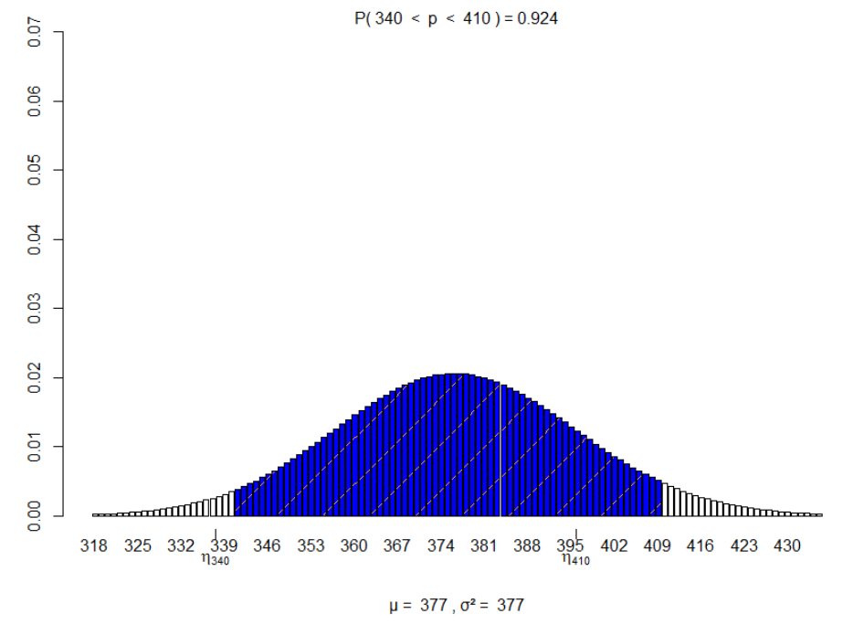
Результаты показывают, что с \(92\%\) вероятностью можно получить от \(340\) до \(410\) обращений ежемесячно с «Яндекс Директ». Если принять за константу конверсию сайта равной \(n\).
… текст сокращен.
Анализ обращений по 6 сигмам
Главная задача анализа по шести сигмам — научиться отличать системное от случайного, т.е какие данные можно отнести к статистически не случайным. Поняв мощность и границы работы системы, например какое в среднем кол-во обращений может выдавать рекламная кампания в Яндексе, мы сможем увидеть аномалии и провести их анализ с целью устранить или улучшить показатели системы. Так с помощью данного анализа можем шаг за шагом улучшить показатели рекламных кампаний и иных источников трафика.
Сигма — это отношение среднего размаха для какого-то кол-ва подгрупп, деленное на коэффициент \(D2\) из карт Шухарта для этого числа подгрупп.
Что показал нам анализ обращений в рекламной кампании Яндекса.
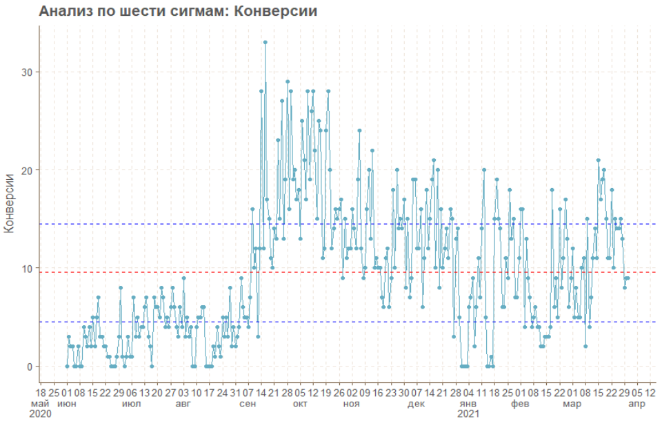
Дескриптор графика
Красная пунктирная линия обозначает среднее кол-во обращений с мая \(2020\) по апрель \(2021\). Синим обозначены границы трех сигм.
Выход за пределы данных сигм означает выход за нормальные производственные мощности системы. Т. е. увидев такой выброс за границы необходимо понять его причину. Если это выходя за верхний предел (т.е. положительное влияние), то понять в чем причина и внедрить в систему. Если выход за нижние пределы, то понять и впредь не допускать. Таким образом, шаг за шагом, постепенно улучшать каждый источник трафика.
… текст сокращен.
Интерпретация графика
Период пандемии сильно искажает границы шести сигм и арифметическую среднюю, как и резкий скачок интереса. Поэтому уберем этот период и проанализируем данные с ноября \(2020\) по апрель \(2021\).
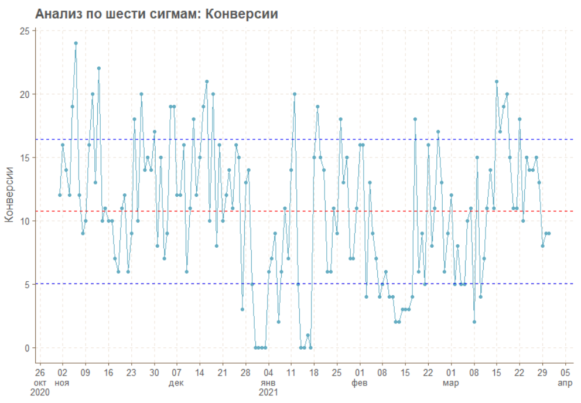
Интерпретация графика
Получили более равномерные данные, но по прежнему наблюдаются частые выходы за пределы границ системы. Видим что «Яндекс.Директ» генерирует от \(5\) до \(16\) заявок в день — это мощность рекламного канала на текущий период. Хорошо это или плохо не известно, но именно с таким КПД работает данная система.
… текст сокращен.
Анализ арифметической средней по обращениям
Шухар и Деминг выделили два критерия, которые должны указывать на рост и контроль системы:
- среднеарифметическая растет или снижается в зависимости от параметра.
- границы сигмы становятся все более узкими. Сокращая вариативность параметра мы берем управление под контроль.
Зная мощность, а также тенденцию арифметической средней мы можем сказать контролируем ли мы рекламный источник, т. е. работаем над улучшением.
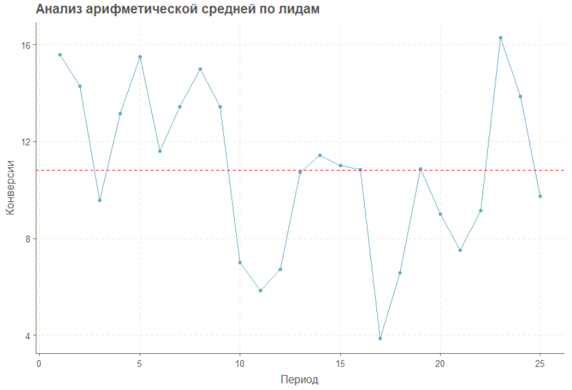
На графике изображено среднее значение обращений за \(22\) недели с ноября по апрель. С ноября по декабрь среднее значение по обращениям постепенно снижалось. Затем январь и февраль с низкими значениями средней. В марте наблюдается выход на прежние показатели.
… текст сокращен.
Анализ качественных лидов
Проведя анализ «качественных лидов» (синия линия на графике) мы заметили высокую корреляцию с «первичными обращениями» (черная линия на графике). Результаты корреляционного анализа непараметрическим методом Спирмена \(rho = 0.7592431\) при \(p-value = 3.186e-12\).
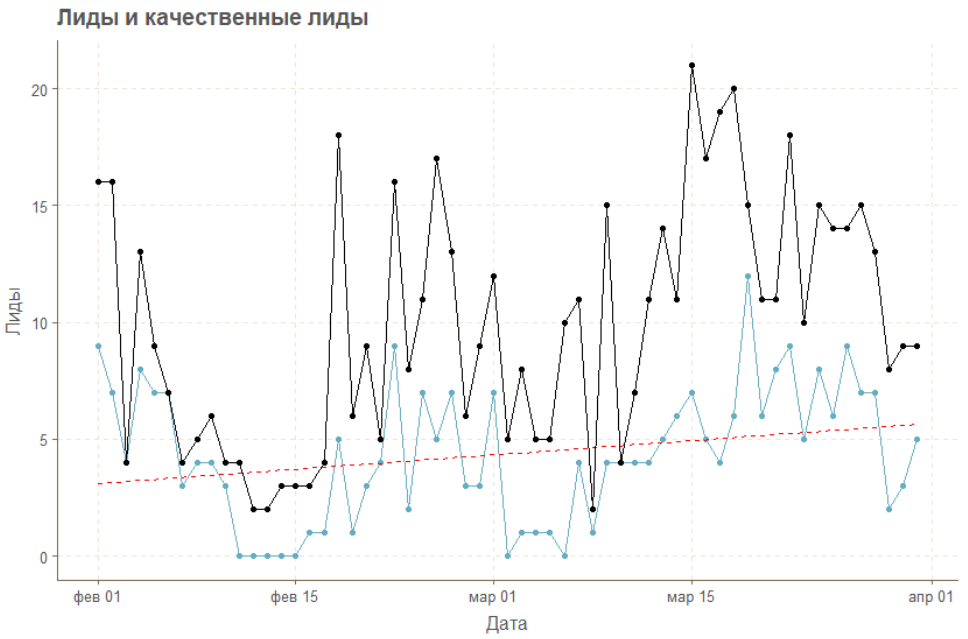
Теоретически это означает, что увеличив кол-во входящих «первичных обращений» увеличим и кол-во «качественных обращений». Как это сделать быстро показано в части «Revenue breakdown».
… текст сокращен.
Анализ целевой аудитории
В данной части мы рассмотрим целевую аудиторию и их характеристики. Рассчитаем объём рынка по модели «TAM SAM SOM». Расскажем о модели Клейтона Кристенсена JTBD и почему это важно. Данная часть разработана на основе собственных исследований и исследований Яндекса. Все ссылки на исследования и «сырые» данные указаны в части «Дополнительные материалы».
JTBD
Американский бизнес-консультант Клейтон Кристенсен сформулировал теорию, которую назвал «теория работ», по-английски — Jobs To Be Done, или «работа, которая должна быть сделана». JTBD затрагивает больше различных аспектов рынка, чем изучение отдельных групп, поэтому изучать нужно не только целевые аудитории и социально-демографические группы, а типы работ, которые выполняют клиенты с помощью продукта, помня, что один и тот же клиент в разное время и различных обстоятельствах одним и тем же продуктом может выполнять разные работы.
Например, допустим у нас ресторан в офисном здании. Каждый день к нам приходит сотрудники офисов. Кто-то на обед, кто-то на завтрак, а кто-то на завтрак, обед и ужин. Таким образом у нас один и тот же человек может «нанимать» ресторан до трех раз в день.
Вот почему важно не описывать выдуманные профили людей в стиле: «это Света, ей от \(20\) до \(45\), у неё двое детей в возрасте от \(1\) до \(20\) и машина… стиральная машина», а знать зачем вашу компанию нанимают. Потому что Света, это вымышленный персонаж, который живет в голове составителя профиля и никакой пользы от этих знаний компания не получит.
Но зная JTBD мы можем с большей точностью определить объем потребительского рынка, что не возможно сделать зная только лишь портрет ЦА. Вернемся к нашему примеру с рестораном и рассчитаем объем рынка. Ресторан знает, что в офисном здании каждый день работают \(1000\) человек. Тогда мы имеем \(3×1000=3000\) потенциальных запросов. Это и есть объём JTBD, он же объем рынка. Допустим ресторан продает \(300\) обедов, ужинов и завтраков в день, соответственно доля рынка у ресторана \(10\%\).
В такой парадигме также можно подумать о рынке недвижимости. Изучив рынок и исследования в сфере недвижимости от Яндекс мы выделили следующие важные JTBD клиентов на рынке новостроек.
Таблица сокращена
| JTBD | JTBD детально |
|---|---|
| Улучшить жильей | Улучшить жилищные условия |
| Сменить съемное жилье на собственное, не тратить деньги на аренду | |
| ... | ... |
Однако нам не достаточно просто знаний о JTBD. Необходимо понять объем каждого JTBD, чтобы выделить наиболее больший сегмент с точки зрения потенциальной прибыли. Для анализа ёмкости рынка применим модель TAM SAM SOM и данные из исследования Яндекс (ссылки на исследования указаны в части «Дополнительные материалы»).
TAM SAM SOM
Расшифруем аббревиатуры модели:
- TAM (Total Addressable Market) — общий объём целевого рынка
- SAM (Served/Serviceable Available Market) — доступный объём целевого рынка, который мы могли бы занять обладая неограниченным ресурсами
- SOM (Serviceable & Obtainable Market) — реально достижимый объём рынка, который мы можем занять сейчас при текущем уровне ресурсов
Используя данные по процентному соотношению JTBD из исследования Яндекса вычислим объем рынка по каждому JTBD, при этом учтем и приблизительное кол-во запросов из поисковой системы Гугл. Согласно данным «Яндекс Радар» Google занимает примерно \(40\%\) рынка, что дает нам около \(60\%\) запросов от текущего объема из Яндекса.
Таблица: кол-во запросов из Яндекс и Гугл в год по ЮФО
Таблица сокращена
| JTBD | TAM | % JTBD | SAM |
|---|---|---|---|
| Улучшить жилье | 19 200 000 | 47% | 9 024 000 |
…
Таблица: кол-во запросов из Яндекс и Гугл в месяц по ЮФО
Таблица сокращена
| JTBD | TAM | % JTBD | SAM |
|---|---|---|---|
| Улучшить жилье | 1 600 000 | 47% | 752 000 |
…
Ежемесячно с обоих источников генерируется примерно 1 600 000 запросов, при этом большая часть запросов — 47% относится к JTBD «Улучшить жилье».
Совместим полученные данные с данными по среднему CTR объявлений из личного кабинета сервиса CallTouch.
Таблица: текущий охват рынка
Таблица сокращена
| JTBD | TAM | % JTBD | SAM | Reach | SOM |
|---|---|---|---|---|---|
| Улучшить жилье | 1 600 000 | 47% | 752 000 | 19 270 | |
| Итого | 2,76% | 41 000 |
…
Таким образом имеем представление, что «N» охватывает примерно \(3\%\) целевой аудитории. Учитывая объем SAM известно, что потенциал роста точно имеется.
Стоит учесть, что это примерные данные, тем не менее они создают систему координат в которой мы можем ориентироваться относительно других участников рынка. Более точные данные по объёму сегментов будут приведены в части анализа факторов выбора, так как данные будут опираться на результаты опроса целевой аудитории по краснодарскому краю.
Характеристики потребителей жилья комфорт-класса
В феврале \(2021\) года компании «Яндекс» и «Бренд Пульс» провели исследование в ходе, которого вывели характеристики покупателей разных классов жилья. Ниже приведены данные по покупателям жилья класса «Комфорт», так как микрорайон «N» принадлежит данному классу.
Данные по поло-демографическим признакам и социальному статусу
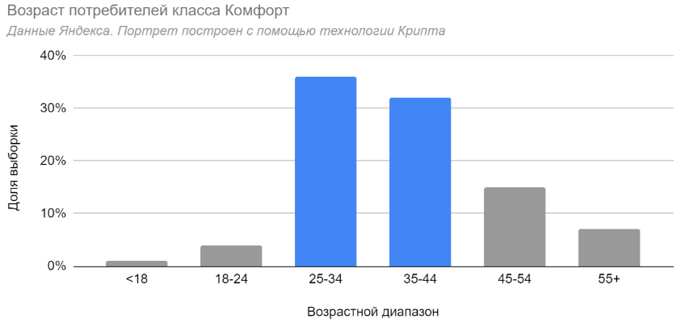
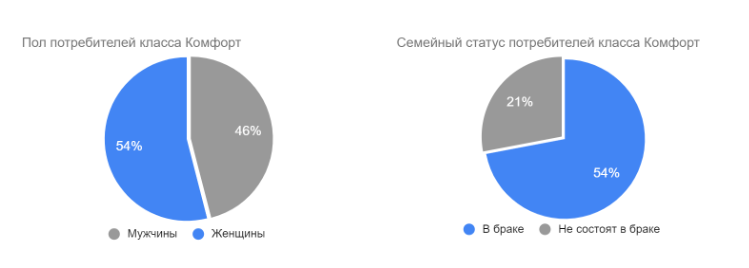
Потребители комфорт-класса моложе и имеют более выраженное ядро аудитории, чем остальные ЦА.
Виды досуга и цифровое потребление
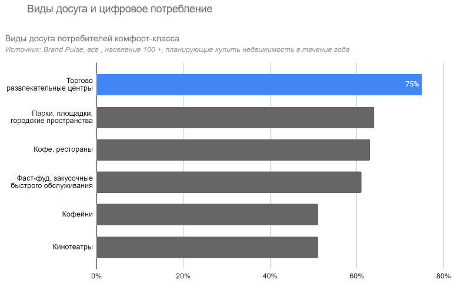
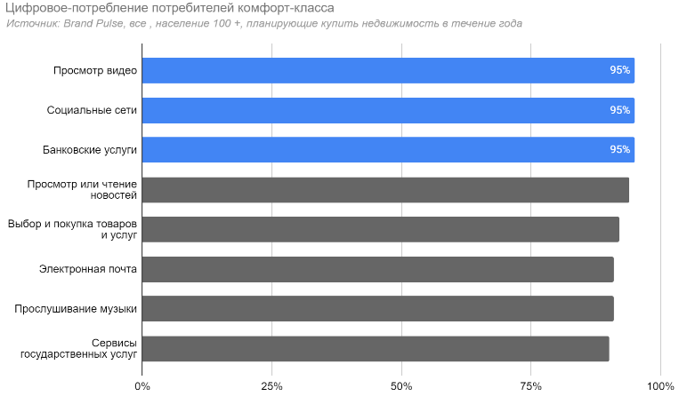
Основные виды досуга — посещение ТРЦ, просмотр видео и серфинг в соц.сетях.
Чувствительность к рекламным источникам
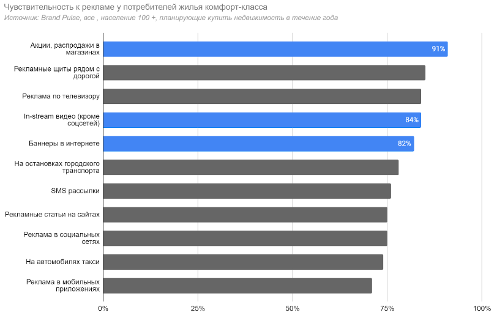 Потребители чувствительны к промо-акциям, замечают видео и баннерную рекламу в равной степени.
Используемые сервисы
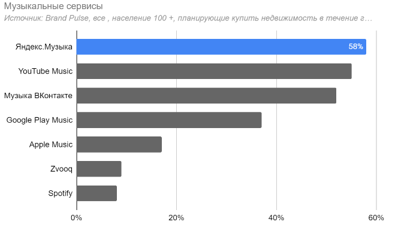
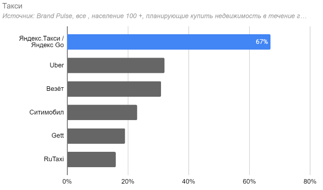
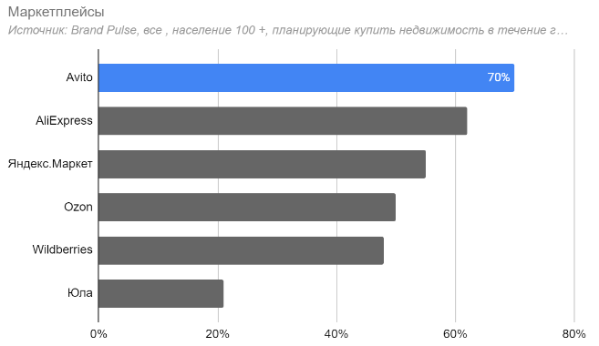
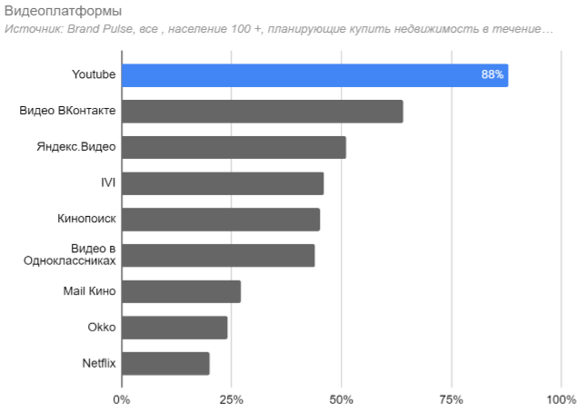
Покупатели комфорт-класса:
- слушают «Яндекс.Музыку» и «Youtube Music»;
- используют «Яндекс.Такси»;
- покупают на «Avito» и «AliExpress»;
- активно потребляют контент на видеоплатформе «Youtube».
Точки роста
… текст сокращен.
Анализ факторов выбора квартир
Дизайн и цели опроса
Цель проведения опроса выявить наиболее и наименее важные критерии выбора квартиры с помощью QFD-анализа. Также данные опроса используются для построения ценностно-стоимостной карты.
Онлайн-опрос проведен через сервис «Яндекс Взгляд» по пользователям с интересом «недвижимость» по ЮФО.
Формирование выборки
Как мы уже знаем, ежемесячно в поисковых системах «Яндекс» и «Гугл» в среднем формируется \(1,6\) млн запросов — это наша генеральная совокупность. Из неё формируем выборку для проведения онлайн-опроса по формуле:
\[SS=\frac{Z^2×p×(1-p)}{c^2}\]
где
- \(Z\) — доверительная вероятность, показывает с какой вероятностью случайный ответ попадет в доверительный интервал (например \(1,96\) для \(95\%\) доверительного интервала)
- \(p\) — процент интересующих респондентов или ответов (\(0,3\))
- \(c\) — доверительный интервал. Можно понимать как погрешность, задает размах части кривой распределения по обе стороны от выбранной точки, куда могут попадать ответы (\(0,05 = ± 5\%\)).
Мы получили выборку из \(458\) человек, при этом нам необходимо получить примерно \(137\) полностью заполненных анкет. В сервисе мы указали выборку из \(500\) анкет. В итоге получили около \(600\) анкет из них \(175\) полностью заполненных.
Структура опроса
В опросник входили следующие вопросы: первый распределяющий вопрос: «Вы собираетесь или уже купили квартиру в новостройке Краснодара?». Цель вопроса распределить респондентов на три группы:
- группа 1 — планируют или уже купил квартиру;
- группа 2 — планирует покупать на вторичном рынке;
- группа 3 — не планирует покупать;
- … пункты удалены;
- последний вопрос просьба указать пол и возраст. В данный блок попадают респонденты всех групп. Важно понимать какую целевую аудиторию опросил сервис и сопоставляются ли данные с результатами исследования Яндекса, о которых мы говорили в части «Характеристики потребителей жилья комфорт-класса».
Результаты опроса
Возраст респондентов
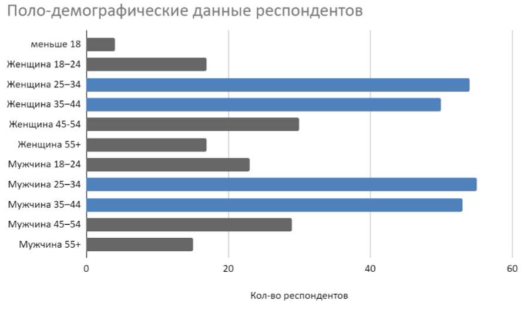
Основная часть аудитории по которой проходил опрос это женщины от \(25 - 44\) лет и мужчины той же возрастной группы. Данные прекрасно соотносятся с данными исследования Яндекса.
…текст сокращен
Распределение по группам
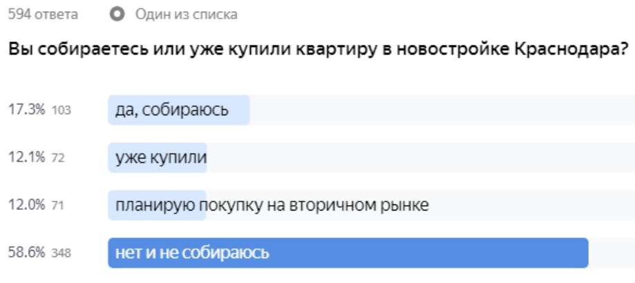
Данное распределение мы можем экстраполировать на генеральную совокупность согласно статистическим принципам. В роли генеральной совокупности у нас количество ежемесячных запросов из поисковых систем. Таким образом мы получаем следующие распределение:
| Ген совокупность | Интент | Распределение | Кол-во |
|---|---|---|---|
| 1 600 000 | Интересуются покупкой | 17% | 270 000 |
| Вторичный рынок | 12% | 190 000 | |
| Остальные | 71% | 1 140 0000 |
Важно отметить, что в таблице указано кол-во запросов, а не человек. Т.е. один человек в течении месяца может сделать несколько запросов. Тем не менее данное число может служить ориентиром при анализе рекламных кампаний.
В сегмент «остальные» входят те кто купил квартиру, и все кто так или иначе связан с недвижимостью от риэлтора до аналитиков рынка. Данный сегмент во всех нишах всегда больше.
Причины покупки квартиры
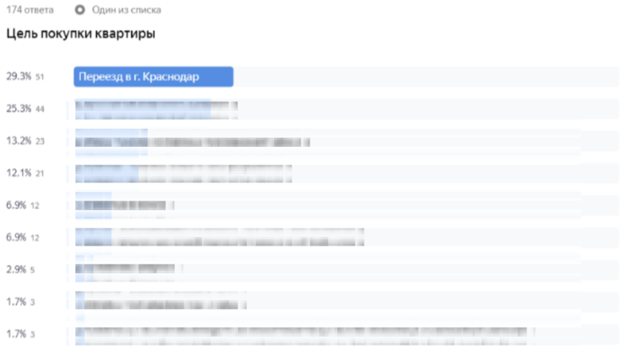
По результатам опроса выделили три основных причины (JTBD) для покупки квартиры:
- переезд в Краснодар
- …
Теперь можно скорректировать объем сегментов по JTBD согласно результатам наших опросов.
Таблица сокращена.
| JTBD | TAM | %JTBD | SAM |
|---|---|---|---|
| Пeреезд в Краснодар | 270 000 | 29% | 78 000 |
| … | … | 25% | 68 000 |
…текст сокращен
Quality Analysis Function (QFD)
QFD, или построение матрицы развертывания функций качества, помогает просчитать факторы, по которым клиент выбирает ваш продукт.
…текст сокращен
Матрицу QFD необходимо строить, если вы не знаете:
- какие характеристики нового продукт важны для покупателя;
- какое позиционирование выбрать для существующего продукта или услуги;
- какое позиционирование выбрать для вашей компании;
- на чем делать фокус в контентной стратегии (о чем рассказывать и под каким углом);
- какие точки контакта являются самыми важными для ваших клиентов.
Существует два подхода к построению QFD анализа. Первый укороченный вариант «small QFD» — когда мы анализируем через бета-веса результаты опроса и определяем наиболее важные критерий. В данном исследовании применён именно данный подход.
…текст сокращен
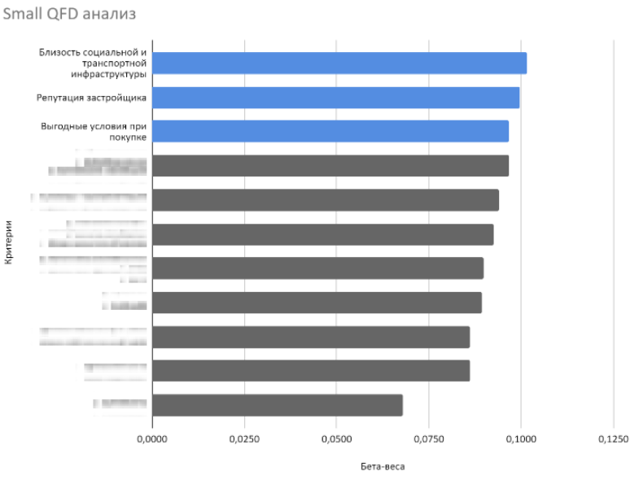
Результаты опроса
Потребители жилья комфорт-класса выделили следующие основные критерии выбора:
- близость социально и транспортной инфраструктуры;
- репутация застройщика;
- выгодные условия при покупке.
Следует обратить особое внимание на данные факторы при выстраивании коммуникации с клиентами. Использовать их …текст сокращен.
Анализ конкурентной среды
Отбор конкурентов
Методология отбора конкурентов строится на гипотезе, что чем больше показов у домена конкурента по выбранным ключевым словам (т. е. чем больше доля охвата), тем больше трафика получает домен, а значит это наш конкурент в сети.
Для отбора конкурентов в интернете мы выгрузили семантику из Яндекс.Метрики запросили файл с существующей семантикой и дополнительно распарсили ключи в обеих поисковых системах. В итоге было отобрано для анализа в поисковой выдачи примерно \(1400\) ключевых слов и \(500\) в платной выдаче. Этого достаточно для оценки конкурентной ситуации в сети.
В итоге по семантическому ядру выявлено уникальных доменов (не повторяющихся) конкурентов:
- Яндекс.Директ - \(312\)
- Гугл Реклама – \(71\)
- Поисковая выдача Яндекс - \(610\)
- Поисковая выдача Гугл – \(606\)
Наличие данного кол-ва уникальных доменов в каждом из каналов показывает уровень конкуренции в этих каналах.
Далее конкуренты для анализа отбирались по следующим критериям:
- наибольший охват семантического ядра. Т.е. учитывалась частота появления домена по анализируемым ключевым словам;
- присутствуют в большинстве каналов привлечения трафика – т. е. присутствуют и в органической выдаче Яндекса и Гугл, и в платной выдаче данных систем;
- являются прямыми конкурентами – т. е. предоставляют те же услуги и продукты, что и Вы и в том же регионе;
- домен не является сайтом агрегатором или маркетплейсом.
В результате отобраны следующие прямые конкуренты для анализа:
- …текст сокращен
Привлечение
В данном разделе мы ответим на вопрос из каких источников сайты конкурентов привлекают трафик на сайт. В каких источниках сильная конкуренция, а какие источники используются слабо.
Источники трафика используемые конкурентами
Данные по источникам трафика собраны на основе анализа сайтов конкурентов с помощью сервиса «SimilarWeb». На гистограмме показаны агрегированные параметрические данные по трафику на десктопные устройства, т. е. это усредненный показатель по анализируемым конкурентам.
Данные помогут понять структуру трафика, а также выяснить в каком из источников ожидается сильная конкурентная борьба за трафик, а каким источникам уделяется мало внимания.
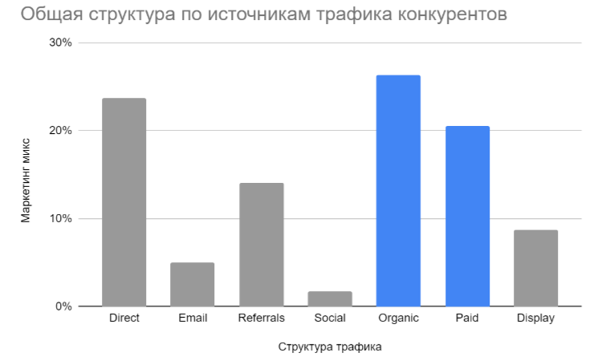
На гистограмме видно, что компании активно используют как органический трафик, так и платные источники трафиков. Сервис «SimilarWeb» в источник «Referrals» записывает переходы из платной и бесплатной выдачи поисковой системы Яндекс, поэтому трафик из этого источника правильно распределить по источникам «Organic» и «Paid».
…текст сокращен
Посещаемость сайтов конкурентов
Сервис неточно предоставляет данные по кол-ву визитов на сайты конкурентов, к тому же имеются данные только посещений с десктопных устройств. Однако измерив показатели визитов конкурентов в метриках сервиса и сравних их с показателями сайта «N» можно понять наше место в конкурентном окружении.
Данные следующие:
Таблица сокращена
| № | Конкуренты | Визиты |
|---|---|---|
| 1 | … | 49 333 |
| 2 | … | 44 000 |
| 3 | … | 31 667 |
Стоит отметить что в таблице представлены данные по визитам только с десктопных устройств и не учтены данные по посещению сайтов с мобильных устройств. Однако, представленных данных вполне достаточно для определения сильных конкурентов в интернете. Именно с этими сайтами будет происходить борьба за трафик по семантике и другим способами таргетирования.
Что касается распределения трафика по типам устройств, 66% трафика приходится на мобильные устройства.
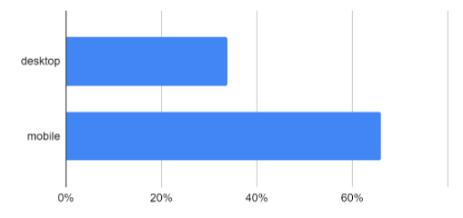
Это важно учесть, так как первое знакомство с сайтом компании, как правило, происходит с мобильного устройства, особенно на уровне несформированного спроса. В первую очередь сайт должен быть оптимизирован под мобильные устройства.
Далее мы подробно рассмотрим структуру платных и бесплатных источников трафика в SERP.
Поисковый трафик (SERP)
Собрав первичную семантику, мы с помощью программных средств сбора (Python) и анализа данных (RStudio) увидели кто из конкурентов встречается наиболее часто в платной и бесплатной выдачи и у кого больший охват по семантическому ядру.
В платной выдачи участвовало …текст сокращен
Показатель «Показы» в таблице — показывает суммарное кол-во показов по семантическому ядру, т. е. если «показ» равен \(492\) это означает, что из \(520\) ключевых слов домен показывался \(492\) раза. Показатель «% охвата» — показывает долю охвата от семантики в относительных показателях.
Платная выдача Яндекс
Всего в платной выдаче по Краснодару обнаружено \(312\) доменов. Это достаточно много, что говорит о сильной конкуренции в данном источнике.
Показатель «Ср. позиция» в «Яндекс Директ» служит косвенным показателем того, кто больше всех платит за клик на аукционе. Чем ближе к нулю, тем большие ставки делает конкурент.
Таблица: конкуренты в платной выдачи Яндекс
Таблица сокращена
| № | Домен | Показы | Ср. позиция | % охват |
|---|---|---|---|---|
| 1 | mrqz.me | 492 | 10 | 95% |
| 2 | Avito.ru | 447 | 1 | 86% |
| 3 | подбор-квартир-в-краснодаре.рф | 388 | 9 | 75% |
На первом месте сайт mrqz.me — сервис по созданию квизов. Ниже представлены компании и жилые комплексы, которые используют данный сервис (расположены в порядке частотности использование по убыванию):
- …список сокращен
Также среди доменов участвующих в аукционе замечена значительная доля сайтов агрегаторов. Данные сайты, судя по средней позиции, больше всех платят за клик, например «avito» и «kayn», при этом имеют наибольший охват по ключевым словам.
Среди прямых конкурентов стоит отметить сайты …
Интересно отметить присутствие в выдаче ресурса zen.yandex.ru. По ключевым словам ранжируются статьи со следующими заголовками:
- Почему так стремительно растут цены на жилье…
- Как мы 12 лет прожили на Юге России и почему по итогу…
- Актуальные планировки и цены на квартиры…
- …список сокращен
В основном статьи принадлежат блогерам. Страница на Дзен компании «N» — рекламный материал и это единственный застройщик, который замечен в платной выдаче через данную площадку. Также присутствует компания «N» предоставляющая аналитику и новости рынка недвижимости.
…текст сокращен
Аукцион в Яндекс Директ
Мы провели дополнительное мини исследование с целью выяснить меняется ли ставка в зависимости от домена.
Загрузив в интерфейс «Директа» группы объявлений, где в каждой группе одно объявление таргетированное по ключу «купить однокомнатную квартиру» мы получили следующие данные по ставкам для объема трафика равному \(100\%\).
Таблица сокращена
| ЖК | URL | Прогноз 100% | Списываемая |
|---|---|---|---|
| 633 | 414 | ||
| 517 | 344 | ||
| 602 | 397 |
Видно, что у всех посадочных страниц разные прогнозные цены и списываемая цена. Самая низкая списываем цена у посадочной страницы .
Дальнейший анализ посадочных страниц в части «Вовлечение» покажет, что у данная посадочная страница занимает последние место в рейтинге по раскрытию контуров (первое место у «ЖК Fresh»). Однако, «Яндекс» ставит им более низкую ставку. Возможно, что сама рекламная кампания внутри интерфейса грамотно настроена, либо пользуются бид-менеджером, что позволяет держать низкую ставку.
Платная выдача Google
Раздел сокращен
Органический трафик Яндекс
Таблица сокращена
| № | Домен | Показы | % охвата |
|---|---|---|---|
| 1 | avito.ru | 1577 | 115% |
| 2 | krasnodar.cian.ru | 1430 | 105% |
| 3 | realty.yandex.ru | 1367 | 100% |
Как видно наибольший охват по анализируемому ядру имеют сайты агрегаторы. Т. е. когда человек вбивает запрос связанный с покупкой квартиры, то с высокой долей вероятности на первой странице он увидит сайты из данного списка. Как видно ни одного сайта конкурента в ТОП-20 нет.
…текст сокращен
Органический трафик Google
Раздел сокращен
Сайты прямых конкурентов в поисковой выдаче
Что касается анализируемых доменов конкурентов то в поисковой выдаче они практически не присутствуют, что видно из таблицы по доли охвата семантики. Однако сайт N выделяется среди всех конкурентов, особенно в Google, что говорит о хорошей оптимизации сайта под данный поисковик.
Таблица сокращена
| № | Домен | Охват в SERP Яндекс | Охват в SERP Google |
|---|---|---|---|
| 1 | … | 5,3% | 26,7% |
| 2 | … | 1,2% | 6,9% |
| 3 | … | 0,8% | 0,6% |
…текст сокращен
«Вертикальное SEO»
Стратегия вертикального SEO подразумевает размещения напрямую на сайтах агрегаторах, маркетплейсах и других подобных сайтах. Учитывая ситуацию в SERP это оптимальная стратегия, так как сайты застройщиков могут получать поисковый трафик в основном по брендовым запросам. Разместившись на как можно большем кол-ве указанных площадок есть вероятность получить дополнительный трафик.
В первую очередь необходимо рассмотреть следующие ресурсы на которых можно разместить объявления:
- avito.ru
- krasnodar.cian.ru
- realty.yandex.ru
- … список сокращён
Социальные сети
Раздел сокращен
Медийная реклама
Раздел сокращен
Brand Lift
Данная метрика показывает насколько известен бренд среди пользователей Яндекс по Краснодару и какой тренд у изучаемых брендов. Данные берутся из сервиса «Яндекс.Вордстат».
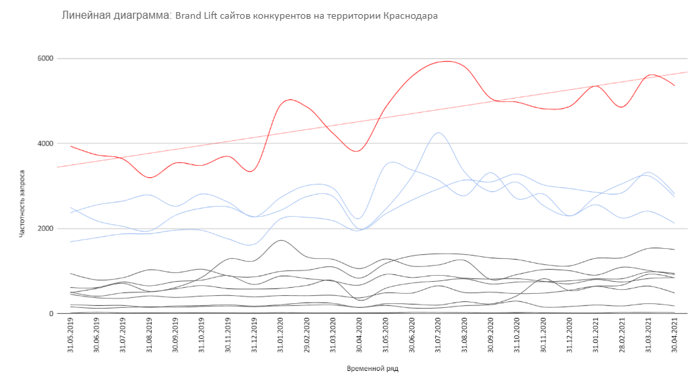
Красная линия в частотной зоне от \(4\ 000\) до \(6\ 000\) обозначен бренд компании «N». Линия тренда явно стремится к росту, бренд становится более узнаваем в интернете на территории Краснодара.
В частотной зоне от \(2\ 000\) до \(4\ 000\) расположились три компании:
- … сокращено
Точка роста
…текст сокращен
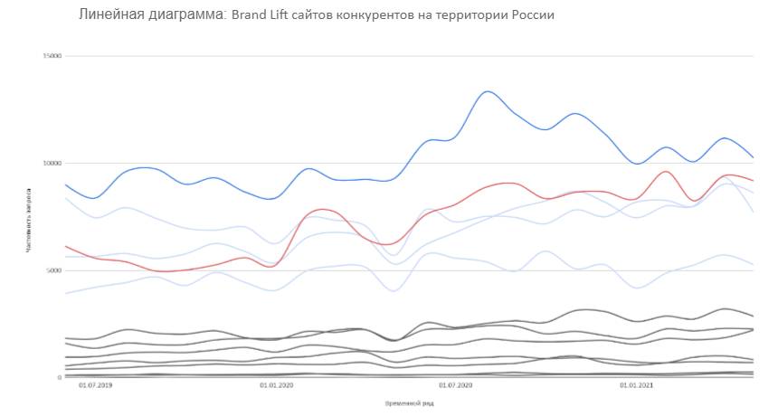
Ситуация по России несколько иная, в частотной зоне от \(10\ 000\) до \(15\ 000\) находится компания «N».
В зоне от \(5к\) до \(10к\) расположились компании «N» (красная линия), «N» и «N».
…текст сокращен
Таблица: корреляционный анализ частотностей упоминания бренда по компаниям
Сокращено…
Если мы агрегируем частотности всех брендов, то получим метрику, которая косвенно покажет, что происходит со спросом на рынке недвижимости.
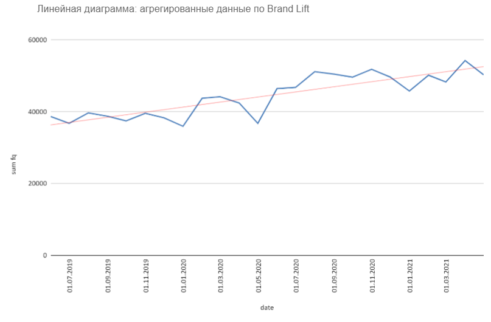
В данной нише хороший тренд на рост спроса, а это значит, что на ближайший год ожидается прирост пользователей интересующихся покупкой квартир на первичном рынке. Данную гипотезу мы далее исследуем через анализ тренда в RStudio.
Вовлечение
В данном разделе мы покажем как компании проводят первичную коммуникацию с клиентами, чем вовлекают и как удерживают внимание. Проанализируем рынок на степень его зрелости через ценностно-стоимостную карту.
Позиционирование
По поводу позиционирования в сфере девелопмента замечательно высказался наш московский коллега маркетолог И. Балахнин. Ето точку зрения, с которой мы полностью согласны, изложим ниже.
Один из ключевых вызовов рынка девелопмента — переход застройщика к логике клиентоцентричности. Все чаще позиционирование строится не вокруг абстрактных слов и слоганов, а вокруг решения конкретных задач клиента.
…
Текущие ТТХ объектов воспринимаются покупателями как должное; то, что могло восхитить и явиться своего рода «Moment of Truth» ещё \(5\) лет назад, сегодня напрочь перестало работать.
Более того, заметно усложнилась и модель принятия решений: в условиях растущего предложения и высокого уровня ценовой прозрачности клиенты всё чаще обращают внимание не только и не столько на позиционирование ЖК. В связи с этим мы выделяем \(5\) так называемых контуров, вокруг которых девелоперам стоит выстраивать позиционирование:
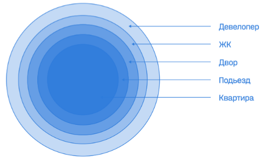
Контуры объектов недвижимости
Внутренний контур «Квартиры». Клиентов все чаще интересует планировки. Покупателям важно понять, как они смогут жить в этой квартире, насколько она закрывает или не закрывает их насущные потребности.
«Подъезд». Клиента волнует, как оформлены места общественного пользования, есть ли кладовые, насколько контингент жителей подъезда соответствует социальному статусу покупателя да и просто похож на него или не похож.
…текст сокращен
Анализ конкурентов по контурам
Взяв на вооружение данные контуры с небольшими корректировками (добавили контур район, а подъезд объединили с домом) мы проанализировали контент посадочных страниц, сделали выводы по качеству каждого контура и общему позиционированию.
Будем оценивать каждый контур по ступенчатой десятибалльной шкале. Система оценок следующая:
- наличие контента — ставим \(3\) балла;
- полнота — сгруппированная оценка состоящая из нескольких дополнительных параметров. Прибавляем к предыдущему критерию от \(0−3\);
- подача — сгруппированная оценка \(0−3\) баллов;
- WOW-эффект — прибавляем \(1\) балл к накопившимся.
В итоге получили несколько таблиц:
- первая — общие итоги по качеству страниц по всем застройщикам;
- вторая — общие итоги детально по элементам;
- третья — итоги по каждому застройщику и место в рейтинге.
В таблице ниже видим долю использования на сайте каждого контура по всем участницам исследования и показатель качества контуров (Quality Rate). Quality Rate — показывает у какой доли сайтов высокий (больше \(7\)) балл по указанному элементу.
Таблица: общие итоги по застройщикам
| Контуры | Доля использования | Quality Rate |
|---|---|---|
| Квартиры | 90% | 27% |
| Дом | 54% | 7% |
| Двор | 69% | 3% |
| Район | 92% | 17% |
| Застройщик | 88% | 46% |
Контур «квартиры» так или иначе представлен у всех, однако не со всеми элементами данного контура работают застройщики (об этом следующая таблица).
Контуры «Дом» и «Двор» реже всего используются компаниями. Как правило это некое упоминание с невнятным описанием и фотографией.
Зато хорошо говорим о себе, о чем говорят итоговые оценки по контуру «застройщик».
Таблица: итоги в разрезе элементов
Описание таблицы:
- столбец «Элементы исследования» — элементы из которых состоят контуры.
- «Средний балл» — средний балл по элементу по всем застройщикам.
- Значения в столбцах «Отлично», «Средне», «Приемлемо» — показывают кол-во компаний у которых элементы соответствуют указанному уровню качества.
- «Доля использования» — доля использования элемента на посадочной странице среди девелоперов.
- «Quality Rate» — показывает у какой доли сайтов высокий (больше 7) балл по указанному элементу.
Таблица сокращена
| Контуры | Элементы исследования | Средний балл | Отлично | Среднее | Приемлемо | Доля использования | Quality Rate |
|---|---|---|---|---|---|---|---|
| Квартиры | Контент по 1-2-3 квартирам | 5,5 | 2 | 9 | 1 | 100% | 17% |
| Преимущества 1-2-3 квартир | 5,0 | 1 | 9 | 2 | 92% | 8% | |
| Квартиры с отделкой | 4,5 | 1 | 3 | 8 | 67% | 8% | |
| Подбор квартир | 6,7 | 9 | 2 | 1 | 100% | 75% |
По контуру «квартиры». Большинство компании уделяют большое внимание функционалу подбора квартиры, но часто забывают указать преимущества квартир. Из контента по квартирам используют схемы, очень мало фотографий, дизайнерских 3D моделей, и только на одном сайте можно прогуляться по квартире и посмотреть в окна.
Напомни, что это один из важнейших контуров, от того как его раскроет компания будет зависеть решение занесут ли застройщика в список рассматриваемых вариантов при прочих равных.
…текст сокращен
Таблица: итоги по каждому застройщику
Таблица сокращена
| Компании | ЖК | Место в Рейтинге | Средний балл | Сумма баллов | Комплектность | Quality Rate | Место Сумма баллов | Место Комплексность | Место QR |
|---|---|---|---|---|---|---|---|---|---|
| … | … | 1 | 6,8 | 116 | 94% | 56% | 1 | 2 | 1 |
| … | … | 2 | 5,2 | 93 | 100% | 22% | 3 | 1 | 2 |
| … | … | 4 | 5,4 | 81 | 83% | 22% | 4 | 4 | 2 |
Точки роста или что нам делать с этими данными
На сайтах компаний нет четкой структуры согласно контурам и не качественно, в большинстве случаев, реализованы критерии «полнота» и «подача». Так, например, о квартирах начинаем говорить где-то в середине посадочной странице, о дворе где-то в самом низу или вообще нет информации, о жилом комплексе и районе либо вверху страницы либо в середине.
Отсюда нет четкого позиционирования у жилых комплексов комфорт-класса. Рынок стремится приобрести признаки коммодитивных рынков, т. е. клиенты выбирают застройщика ориентируясь в основном на цену за квадратный метр жилой площади.
Исходя из всего вышесказанного рекомендуем …текст сокращен
Раскрываем каждый контур подробно с особым вниманием к критериям «полнота данных» и «подача».
Ценностно-стоимостная карта рынка
Ценностно-стоимостная карта анализирует цену на уровне конкурентов. Цель составления карты узнать уровень зрелости рынка, который поможет ответить на вопрос: «а клиенты хорошо понимают, за что они платят?» и «что нам делать (какой стратегии придерживаться) в том или ином случаи?»
Для построения анализа мы взяли цену квадратного метра в однокомнатной квартире и данные по бета-весам критериев выбора. Далее провели анализ жилых комплексов по доступным в сети материалам (сайт, соцсети, POSы) проставляя коэффициент «проявленности критерия» по шкале от \(1\) до \(5\) напротив каждого критерия по каждому ЖК, где \(1\) — критерий никак не встречается, а \(5\) - является основным доминирующим критерием. Перемножив коэффициенты и бета-веса критериев мы сформировали метрику «ценность».
Полученные данные разместили на декартовой системе координат, где по оси абсцисс указываем цену, а по оси ординат ценность.
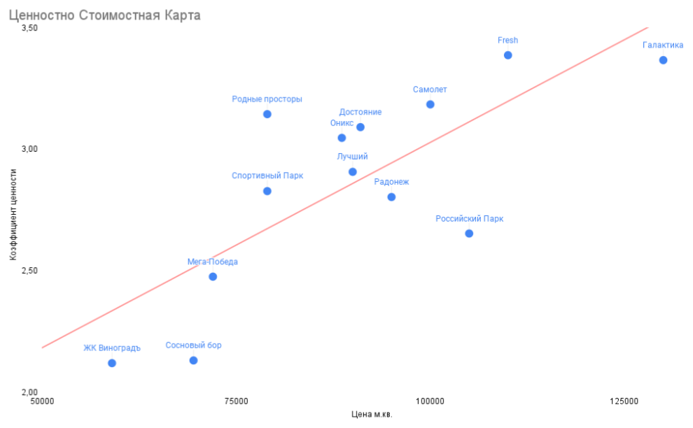
На графике видно, что участники рынка стремятся выстроиться в линию. Это означает что рынок приближается к зрелой стадии, когда участники точно знают соотношение цены качества (пример такого рынка может служить например рынок телевизоров, где есть четкие стандарты и участники рынка выстраиваются практически по идеальной прямой).
Однако в нашем случаи есть возможности для представления стоимости за счет лучшего раскрытия критериев перед конкурентами. Это хорошо видно на прямой, когда некоторые конкуренты запрашивают высокую стоимость квартиры, но плохо её презентуют. Такие игроки рынка находятся под красной линией.
Что касается микрорайона «N», то … текст сокращен
Анализ тренда
Даное исследование проводиться с целью увидеть куда движется интерес пользователей в интернете. Он растет, стабилен или падает. Зная уровень интереса мы можем корректировать стратегии и планировать объем необходимых ресурсов для привлечения новых клиентов.
Исследуем:
- тренды в поисковых системах Яндекс и Гугл
- создадим прогностические модели спроса на следующий год
Исследование тренда в Яндекс
Анализ тренда проводился путем сложения частотностей запросов по месяцам основного семантического ядра. Регион сбора частотности ЮФО. Статистику собирали с помощью парсинга сервиса Яндекс.Вордстат через программу Key Collector. Собрав данные и просуммировав все частотности по всем ключевым словам в ядре, далее обработав данные в RStudio мы получили общую картину по направлению тренда.
Представление тренда
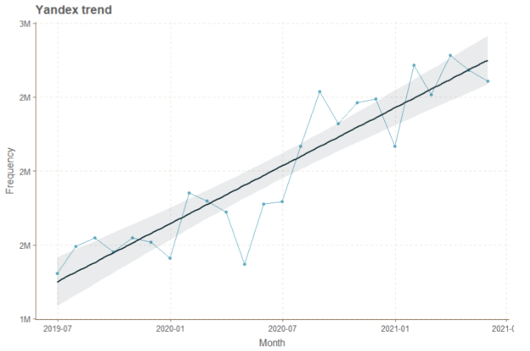
Как видно из графика тренд имеет явное направление на рост, что говорит о возрастающем интересе к данной теме. Эти данные хорошо соотносятся с данными по проведенному анализу Brand Lift.
Декомпозиция временного ряда
Временные ряды в общем виде можно представить как сумму трех компонент: тренда, сезонных изменений и шума (колебаний, связанных со случайными факторами). Хорошее понимание структуры временного ряда является важным условием для построения надежных прогнозных моделей.
Разложим временной ряд на тренд с помощью локальной полиномиальной регрессии (STL) при этом переведем частотность в логарифмическую шкалу для лучшего визуального анализа дисперсии.
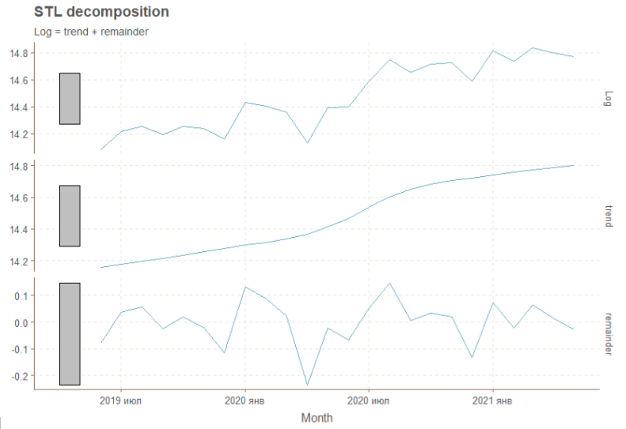
На графике выделенные с помощью метода STL компоненты временного ряда:
- Log — анализируемый временной ряд;
- trend — тренд;
- remainder — остатки.
Если просуммировать компоненты, то получим исходный ряд (приведен на верхнем графике). Серые вертикальные столбцы, изображенные слева от графиков, отражают удельный вклад каждой компоненты в общую дисперсию в данных.
Из графика видно, что наибольший вклад в общую дисперсию вносит тренд, так как диапазон по дисперсии почти полностью совпадает с временным рядом, тогда как шум (remainder) вносит минимальный вклад, что видно по диапазону в логарифмической шкале (охватывает десятичные доли в пределах от \(0\) до \(0,1\)).
Сезонность
Построим график сезонности за два года по агрегированным частотностям ключевых слов.
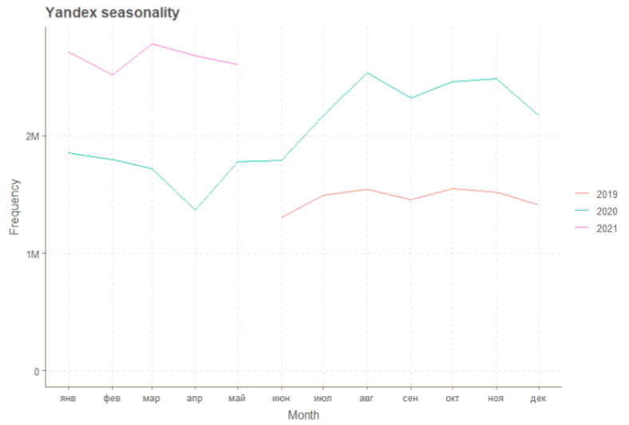
На графике можно видеть сезонные колебания. Например, рост интереса в летние месяцы и постепенный спад к концу года. Заметно снижение спроса с марта по апрель. При этом сезонность имеет накопительный эффект, т.е. год от года число запросов растет. Также стоит отметить резкий рост запросов в \(2020-м\) году.
Исследование тренда в Google
Раздел сокращен
Прогностические модели
Для построения прогнозов по исследуемым временным рядам в Яндекс мы используем либо метод ARIMA (autoregressive integrated moving average) — интегрированная модель авторегрессии скользящего среднего, либо метод тройного экспоненциального сглаживания, или алгоритм Хольта-Винтерса. Метод Хольта-Винтерса хорошо работает, когда в структуре данных прослеживается явная периодичность/сезонность. Например, в B2B-нишах в выходные дни фиксируется спад активности клиентов, а в будни — подъем. Наблюдаем в бизнесе типичный волнообразный цикл.
Можно довольно точно спрогнозировать количество лидов, сессий, продаж или посчитать другие метрики на будущий период с помощью данных предиктивных моделей. В данном исследовании мы прогнозируем частотность запросов и направление линии регрессии.
Прогноз для Яндекс
На основе полученных данных по тренду в Яндекс делаем вывод, что во временном ряду присутствует слабо выраженная сезонность и в формирование данных большую роль вносит постоянно возрастающий уровень запросов в теме недвижимости. В данном случаи можно использовать оба метода либо ARIMA, либо Хольт-Винтерса и выбрать лучшую модель по результатам проверки на среднюю абсолютную удельную ошибку (mean absolute percentage error, MAPE).
Прогнозная модель по методу Хольта-Винтерса
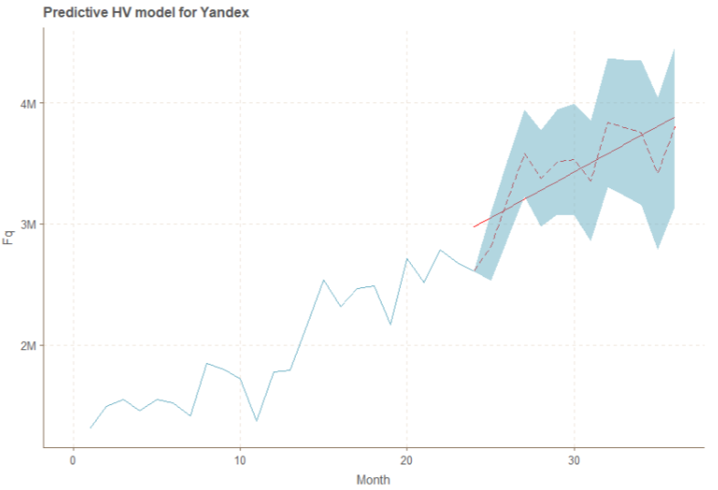
На графике в зеленой области, которая обозначает 80-ти процентный доверительный интервал (т.е. значения с восьмидесятью процентной вероятностью будут находится в данной окрашенной области) проходит красная пунктирная линия предсказанных средних значений. Однако, нас интересует не точные данные, а тренд (красная линия). Как видно из графика тренд на ближайший год показывает рост запросов в поисковой системе Яндекс.
Прогнозная модель по методу ARIMA
Такую же картину мы наблюдаем в модели ARIMA. Ожидается рост интереса в ближайший год в Яндекс.
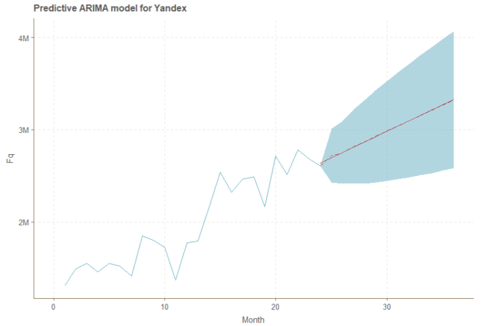
Проверим модели на среднюю абсолютную удельную ошибку (mean absolute percentage error, MAPE) в RStudio:
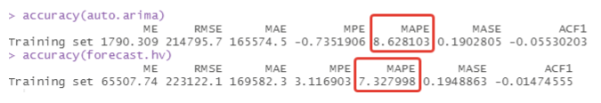
Обе модели имеют низкую удельную ошибку, но лучшая по МАРЕ модель Хольта-Винтерса.
Если говорить об абсолютных и относительных значениях, то через \(12\) месяцев начиная с июня \(2021\) ожидается рост спроса по ЮФО, согласно модели Хольта-Винтерса, примерно на \(45\%\), что составит около 1 млн запросов.
Прогноз для Google
Раздел сокращен
Точки роста
Мы выяснили, что кол-во запросов в Яндексе будет расти, а в Гугл интерес находится на достаточно высоком уровне. Яндекс дает больше вариантов для решения вопросов связанных с продвижением недвижимости, за счет собственных сервисов и различных агрегаторов. Поэтому ожидается дальнейший рост интереса к поисковой системе Яндекс.
…текст сокращен
Дальнейшие действия
Стратегия
Необходимо:
- оптимизировать существующую систему привлечения клиентов согласно отчету Revenue breakdown.
- Контролировать мощность рекламных систем по генерации качественных лидов согласно анализу шести сигм.
- Отделять системное от случайного. Когда выходим за границы системы, анализируем почему это произошло и, в зависимости от ситуации, внедрять или делать так, чтобы этого не происходило.
- …список сокращен
Нужно учитывать зрелость рынка по фокусу конкуренции.
Согласно данной модели все участники рынка проходят через несколько стадий фокусировки преимуществ продукта: фокус на функциональность. Например наш чайник может нагревать воду строго до установленной температуры.
Со временем потребители понимают какой уровень функциональности продукта их устраивает в данной нише и от функциональности фокус перетекает в область безопасности. Т.е. всех начинает интересовать, а насколько продукт безопасен, не вреден, полезен и так далее.
Далее потребители начинают понимать какой уровень безопасности им нужен, а какой уже излишен и тогда после безопасности фокусировка перетекает в сервис.
Однако со временем сервис научаются предоставлять все и тогда рынок перетекает в завершающую стадию фокусировка на цены. Такие рынки называются «коммодитивные». На данных рынках нельзя выиграть конкуренцию иначе как ценой.
Учитывая зрелость рынка недвижимости, помимо контуров и критериев, необходимо сместить фокус …текст сокращен
Тактика
- Необходимо провести медиапланирование рекламных источников опираясь на данные прогнозных моделей.
…текст сокращен
Сквозная аналитика
Важно получать данные по статусам сделки из CRM системы в одну из систем аналитики, чтобы оптимизировать рекламные кампании на уровне дохода, а не по кол-ву обращений. Схема аналитики для Яндекс Метрики может выглядеть следующим образом:
Текст и графики сокращены…
Обращайтесь за ситуационным анализом. Пишите на email: i@akorshakov.ru